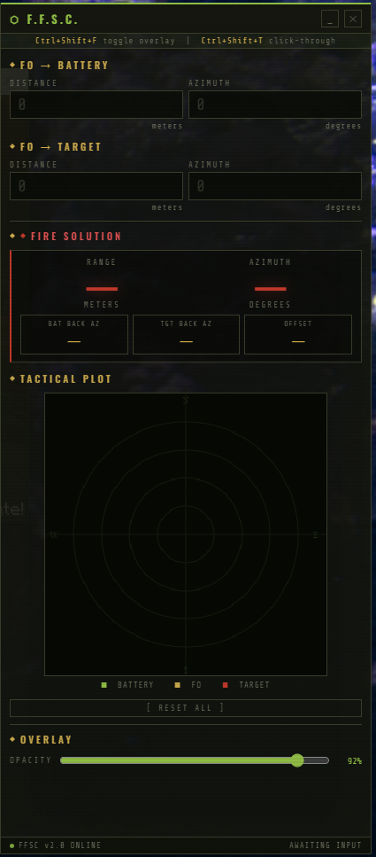

Projects
Things I've built
NeoForge Minecraft mod with deep Create mod integration — full automation pipeline from hydroponics farming to explosive excavation.
- Generalized harvesting logic across vanilla and mod-added crops
- Tiered growth solutions — 1x to 4x speed with nutrient fluid production chain
- 16-color coded C4 with staged blast mechanics
- Ender C4 Launcher boring through 50+ blocks of rock
- Gathering Chest with per-item void filtering and teleport-on-harvest
- Generalized harvesting logic that doesn't hardcode each block type
- Automation progression balancing without breaking gameplay pacing
- Rotational power synchronization with Create's mechanical network
- Gameplay abstraction layers over NeoForge's event system
Technical challenge: Building a harvest system that works across vanilla and mod-added crops without hardcoding each block type individually.
Fullstack household inventory app — graduation thesis with barcode scanning, recipe integration, and live deals.
- JWT auth with refresh token rotation
- Barcode scanning for instant item lookup
- Recipe APIs (Spoonacular, TheMealDB) with server-side MongoDB caching
- Shopping mode checklist with live deals via Tjek/eReklamblad
- Deployed on Railway with GitHub Actions CI/CD
Technical challenge: Aggregating two external recipe APIs with server-side caching to avoid rate limits and keep responses fast.
Firing solution calculator for in-game artillery — because the spreadsheet wasn't good enough.

- Three complete builds: HTML page → Electron overlay → Android PWA/Cordova
- Trigonometric firing solution math tuned per platform
- Desktop overlay stays on top while playing — no alt-tab needed
- Android build runs offline as an installable PWA
Technical challenge: Adapting the same core calculation logic to three radically different deployment targets while keeping each version platform-native.
Personal dev workflow tool — project launcher, git manager, AI scheduler, and system monitor in one Windows tray app.

- Git management via GitHub API (init, commit, push) without leaving the app
- Scheduled AI prompts that run automatically on a timer
- System monitoring with countdown timers and configurable quick-actions
- Fully configurable through a custom-built GUI
- Built entirely to scratch my own itch
Technical challenge: Coordinating async scheduled tasks and GitHub API calls inside a single Electron main process without blocking the UI.